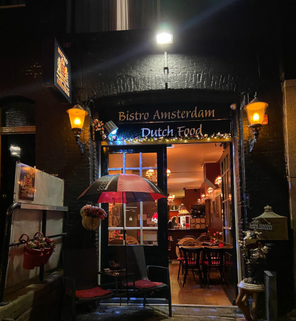

Prinsengracht 287H, in de Jordaan
Bistro Amsterdam
Oer-Hollandse keuken in de grootste en gezelligste woonkamer van de Jordaan. Met de Westertoren om de hoek en het terras aan het water.
Woensdag t/m zondag 14:00 – 23:00, keuken tot 22:00

Welkom in het hart van Amsterdam
Bistro Amsterdam serveert de oer-Hollandse keuken, in een typisch volksbuurtje van vroeger, waar je nog gezellige restaurantjes en winkeltjes hebt. Het Anne Frank Huis is onze buurman, de mooie Westertoren en de Negen Straatjes liggen om de hoek. Fijn na een dagje stad.
Bij ons proef je de oude, authentieke sfeer van de echte Amsterdammer en hoe de mensen vroeger woonden. Met een drankje, heerlijk Hollands eten en Hollandse muziek waar je gezellig mee kunt zingen.
Sfeer en gezelligheid staan bij ons hoog in het vaandel. Hier kun je gewoon zijn wie je wilt zijn.
Aanbevolen door Restaurant Guru (2023). Je vindt ons ook op Tripadvisor en Lonely Planet.


Op ons terrasje zit je maar wat lekker
Je zit direct aan het water van de Prinsengracht, aan de voet van ‘die ouwe Wester’. Kijk naar alles wat er voorbij vaart en schuift, als in een levend schilderij. We schenken ons eigen ijskoude Bistro Amsterdam-bier.
En voor de zomer: onze cocktails, de lekkerste van eigen bodem. Mojito, Aperol spritz, limoncello spritz of een gin-tonic, onder de stralende zon op het mooiste plekje van de Jordaan.

Iets te vieren?
Een vrijgezellenfeest, bedrijfsuitje of verjaardag in een echte Jordanese, Amsterdamse sfeer? Dan zit je bij ons op het juiste adres.
Voor werkgevers: een personeelsfeest kan vaak binnen de werkkostenregeling (WKR). Meer informatie daarover vind je bij de Belastingdienst.
Vragen? Bel gerust of stuur ons een mail.
Reserveren
Bij ons kun je nog gewoon lekker ouderwets bellen. Of stuur een mail, dan zetten we een tafel voor je klaar.
Nou lieve mensen, de groetjes van Bistro Amsterdam, en misschien tot vanavond of een ander keertje.
Openingstijden
- Maandag
- gesloten
- Dinsdag
- gesloten
- Woensdag
- 14:00 – 23:00
- Donderdag
- 14:00 – 23:00
- Vrijdag
- 14:00 – 23:00
- Zaterdag
- 14:00 – 23:00
- Zondag
- 14:00 – 23:00
De keuken is open tot 22:00.
Zo vind je ons
Bistro Amsterdam
Prinsengracht 287H
1016 GW Amsterdam